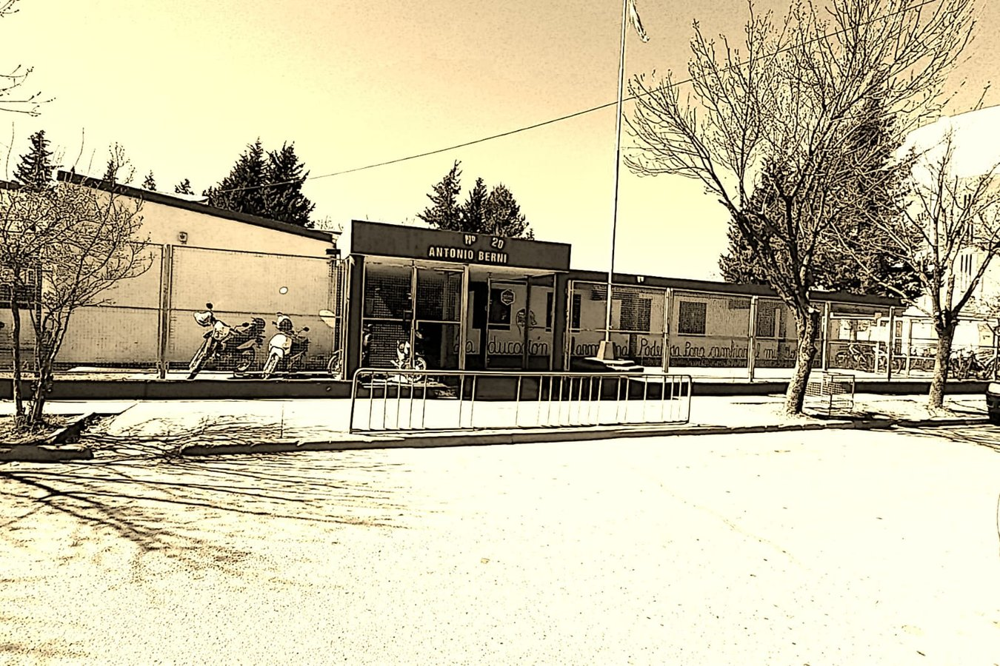
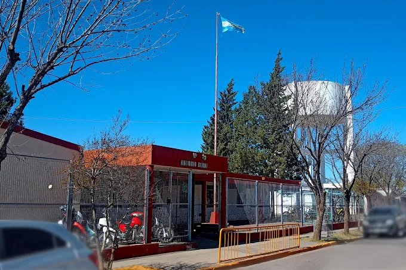

Inauguración
La institución inicia su actividad educativa en Villa Mercedes.
Una historia de crecimiento, compromiso y construcción colectiva en Villa Mercedes.
La institución fue creada mediante el Decreto N.º 218 del Poder Ejecutivo provincial y se inauguró el 12 de abril de 1993, con cinco divisiones de primer año y una matrícula inicial de 160 estudiantes.
Durante sus primeros años atravesó distintas sedes hasta contar con un edificio propio, inaugurado en 1995. Con el tiempo, su propuesta educativa evolucionó y consolidó su identidad vinculada con la informática.
Hoy la ET20 busca que la comunidad la reconozca no solo por sus orígenes, sino también por sus proyectos, sus prácticas y la formación de sus estudiantes.

La institución inicia su actividad educativa en Villa Mercedes.
Tras varias sedes, se inaugura el nuevo edificio escolar.
Egresan los primeros estudiantes de la institución.
La escuela desarrolla experiencias vinculadas con informática, proyectos tecnológicos y vinculación comunitaria.

El trabajo de docentes, estudiantes, familias y egresados sostiene una escuela que aprende, se transforma y se vincula con su entorno.
Conocer proyectos